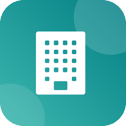

SEE IT IN ACTION
Odoo 20.0 Community & Enterprise

Since Odoo 17, asset management is part of Odoo Enterprise only. Community users calculate depreciation in spreadsheets and type the monthly journal entries by hand, which is slow and easy to get wrong.
Fixed Asset Core adds a compact asset register to Invoicing. Assets are created automatically when a vendor bill is posted on a fixed asset account, or registered manually for opening balances. Each asset gets a straight-line depreciation schedule stored as draft journal entries, and a scheduled action posts them on their date, so your ledger and net book values are always current.
Built for: accountants, finance teams and SME owners on Odoo Community, including Indonesian companies depreciating fixed assets under PSAK 16 or the tax straight-line method (penyusutan aset garis lurus).
Accounts, journal, useful life, period and prorata defined once per category.
Posting a bill line on a fixed asset account creates the asset automatically.
Monthly or yearly, prorata by days, last entry ends exactly at salvage value.
A scheduled action posts every depreciation entry whose date has been reached.
Entries in locked periods are skipped and explained in the asset chatter.
One click posts the write-off of the remaining book value and closes the asset.
List and pivot with gross value, accumulated depreciation and net book value.
Company record rules and standard Invoicing access groups out of the box.
Under Invoicing → Configuration → Asset Categories, each category sets the Fixed Asset Account, Accumulated Depreciation Account, Depreciation Expense Account and Depreciation Journal (miscellaneous journal), plus the default Useful Life in months or years and Prorata Temporis.
When a vendor bill is posted, every line booked on the fixed asset account of a category with Create from Vendor Bills becomes an asset. It takes its name from the line label, its Original Value from the line amount, its Acquisition Date from the bill date, and links the Vendor, Source Bill and bill line.
Register existing assets from Invoicing → Assets → Assets with Original Value, Salvage Value, Acquisition Date, First Depreciation Date and Already Depreciated (depreciation booked before go-live, for which no entry is created). The Useful Life is the number of periods still to depreciate.
Clicking Confirm spreads the depreciable base (original value minus salvage value minus already depreciated) evenly over the useful life and creates one draft journal entry per period (debit expense, credit accumulated depreciation), dated at month end or December 31.
The daily scheduled action Assets: Post Depreciation Entries posts every draft depreciation entry whose date has been reached. Entries dated inside a locked period are skipped and a message in the asset chatter explains why, without stopping the rest of the run. Assets move to Closed once no draft entry remains and the book value equals the salvage value.
The asset list totals Original Value, Accumulated Depreciation and Net Book Value. Search filters Draft, Running, Closed, Acquired This Year and From Vendor Bills, and group by Category, Status, Acquisition Year or Company. Asset Register opens the pivot view by category and status, and Depreciation Entries lists all depreciation moves.
account) and a chart of accounts.It reuses the standard Invoicing groups: Show Full Accounting Features users can read assets and categories, Invoicing Administrators can create, edit, delete, confirm, reset and dispose. Posting a vendor bill creates assets even for billing users without asset rights.
Yes. Categories and assets belong to a company, record rules restrict them to the allowed companies, and the accounts and journal of a category must belong to its company.
The scheduled action leaves that entry in draft and posts a chatter message on the asset with the lock date that blocked it; all other due entries are still posted.
Yes. Enter the amount in Already Depreciated and the remaining number of periods in Useful Life; only the remaining depreciation is scheduled.
Depreciation entries are managed from their asset: use Reset to Draft to regenerate the unposted entries or Dispose to stop the schedule. Posted entries follow the standard accounting rules.
Posted depreciation and disposal entries stay in your ledger as normal journal entries; the asset register, categories and the asset links on journal entries are removed.
Need help with setup, a declining-balance method, PSAK reports or an integration with your processes? yDoD builds and adapts Odoo modules for your business.
dodyakj@gmail.com https://profile.dodyakj.online
yDoD — Dody Ahmad Kusuma Jaya
Work even better together with yDoD apps for Odoo 20.0.